CIMPAL data requirements

Structure your data before running the workflow. This tutorial guides through the minimum requirements and data needed to calculate the CIMPAL index. This applies to the CIMPAL version to assess environmental negative impacts of IAS, without considering biotic interactions. If you use the My LifeWatch platform to calculate CIMPAL, you can upload files previously in the “personal space” or at each step of the workflow as asked.
Other CIMPAL version require slightly different data and recomendations will come soon. In the meantime consult the related publications for details.
Minimum data files needed:
